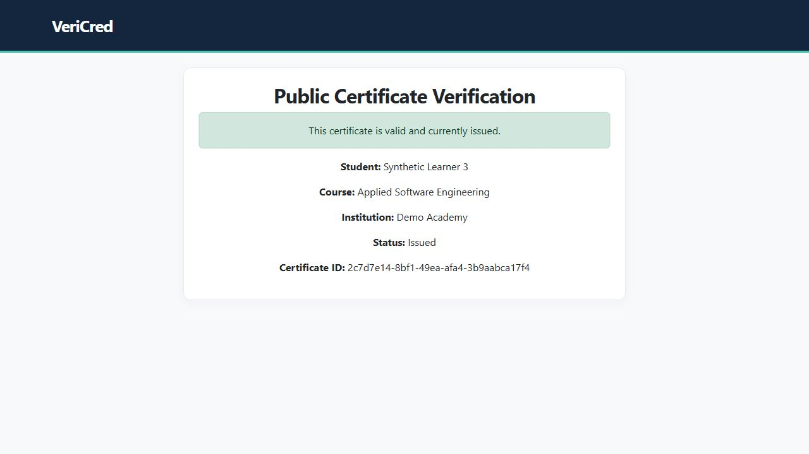

UDO Thesis Management
From a thesis proposal to committee review, document versions and a defense schedule. One traceable academic workflow.
Java 21 / Spring Boot / JPA / SQL
52 tests + 37 PostgreSQL HTTP checks
Case study
Open to remote junior opportunities
Software developer · Cumaná, Venezuela
I build web applications that turn everyday processes into clear, tested workflows. Here’s the code, the decisions and the evidence behind my work.
Download CV in English (PDF)
Descargar CV en español (PDF)
Computer Science student at Universidad de Oriente
Backend development · Workflow design · Functional testing
Selected work
Four projects with documented workflows, automated checks and concrete limits. Every screenshot uses synthetic data.
From a thesis proposal to committee review, document versions and a defense schedule. One traceable academic workflow.
Java 21 / Spring Boot / JPA / SQL

A support queue with ownership, service deadlines and an activity trail. Run it locally without a cloud account.
Python / SQLite / JavaScript / HTTP

Issue certificates through an approval workflow, then verify their status through a public QR link.
Python / Django / QR codes / SQL

Merchant plans, client subscriptions and bank-transfer review, with authorization enforced in the API.
PHP / Laravel / React / SQL
More engineering practice: AWS data pipeline and Flask service catalogs.
Additional technical work
A technical exercise in SDK generation, reproducible builds and API verification.
I generated an unofficial TypeScript client with the Voxgig SDK tools, then built it and verified the generated test suite and live API behavior. The source includes a reproducible generation script and a developer experience report.
TypeScript / Node.js / HTTP / OpenAPI
Live checks cover EUR/USD, EUR/EUR identity, currency details and invalid-currency rejection. This is a verified technical exercise; the npm package has not been published. Read the developer experience report ↗
Practical freelance help
Need a small task handled? Share what needs to change and I will review the scope before quoting.
Update existing page text, links, images and articles, then check the changes on desktop and mobile. Custom plugin work is scoped separately.
Review a defined user flow, reproduce issues and deliver a concise report with steps, expected behavior and screenshots.
Photoshop adjustments for exposure, color and crops. Send a sample and the intended result to agree on the work.
A quote follows the scope, deliverables and timing we agree on.
How I work
My development workflow combines code review, regression tests and hands-on checks.
Model roles, states and data before adding screens. Make approval and ownership rules explicit.
Turn a demonstrated bug into a regression check, then verify the corrected behavior.
Keep setup instructions, synthetic demos, test results and known limits alongside the code.
About me
I’m a Computer Science student at Universidad de Oriente. My academic and personal projects focus on backend logic, databases and usable web interfaces.
My paid freelance experience includes a WordPress plugin customization through Upwork. My academic and personal projects include functional testing and workflow automation. I’m looking for a remote junior development or QA role where I can contribute, receive thoughtful review and keep improving.
Let’s work together
Open to remote junior development, QA and practical web work.